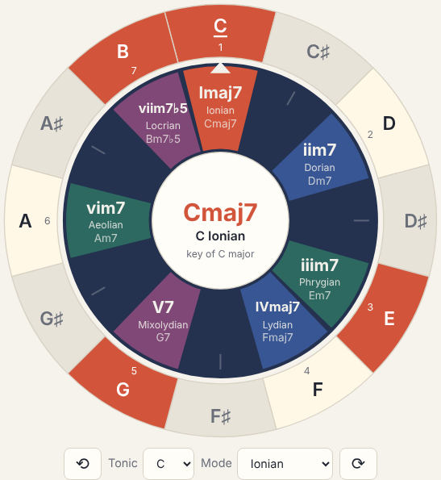
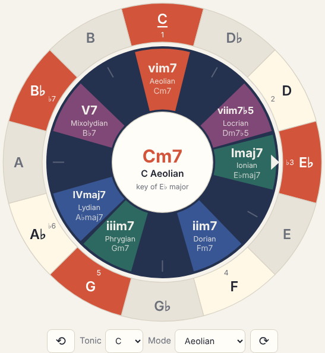
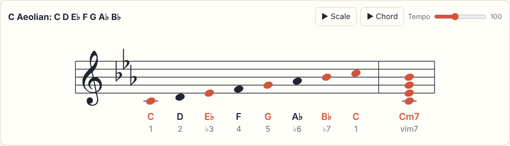
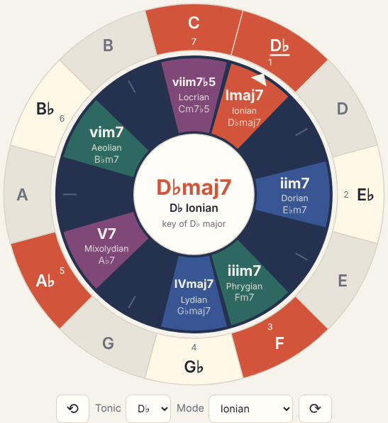
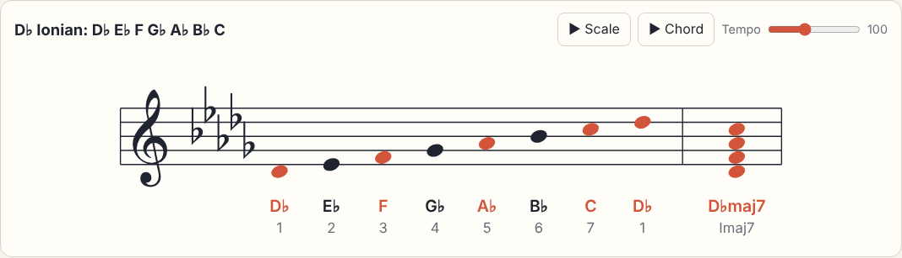
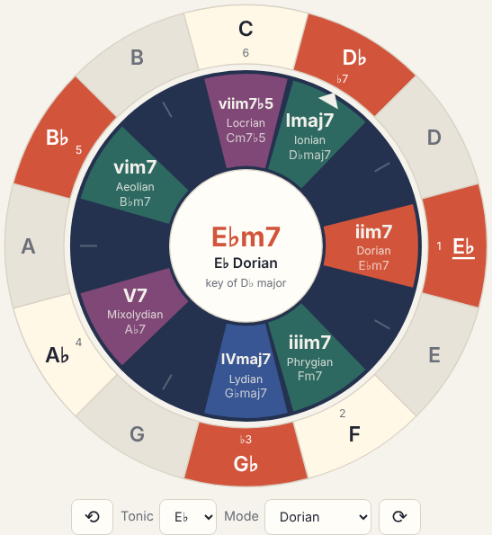
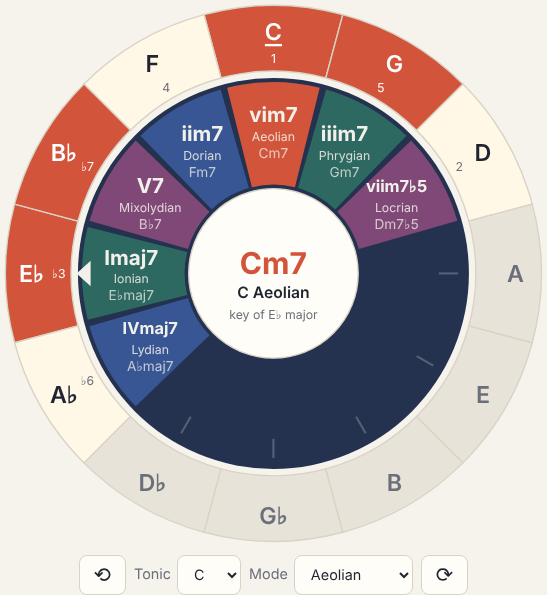
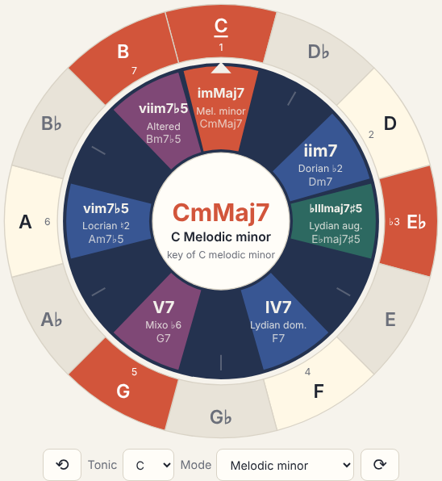
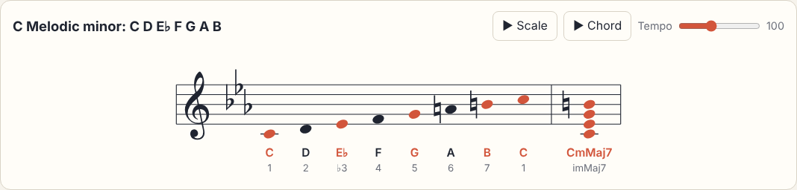
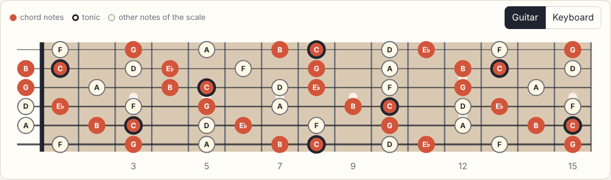

ChordWheel Manual
A digital version of the paper chord wheel: turn the inner wheel to find the notes, chords and modes of any key.
1. A tour of the wheel

- The outer ring is fixed and holds the 12 notes. Pale notes belong to the current key, grey ones don't, and the orange ones are the notes of the selected chord. The underlined note is the home note (tonic) of the selected mode, and the small numbers show each note's step in that mode.
- The inner wheel turns. It holds the seven chords of a major key, on the seven degrees I to vii. The little white arrow marks degree I: the note it points at is the key. Slots with only a tick mark are notes outside the key.
- Each degree shows its roman numeral and chord type (e.g. iim7), the mode that starts on it (Dorian), and the chord name in the current key (Dm7).
- The colours tell you what a chord tends to do: Home chords feel at rest, Away chords move away from home, and Tension chords want to resolve back to I.
- The centre shows the selected chord, its mode and the parent key.
- The staff at the bottom shows the selected mode as a scale, with the key signature, the note names and the step numbers, followed by the selected chord.
2. Controls
| To do this | Do this |
|---|---|
| Change key | Drag the inner wheel, or use ⟲ ⟳ (or the arrow keys on a keyboard). The wheel snaps to the nearest note. |
| Pick a chord and its mode | Tap a coloured degree, a row of the chord table (below the guitar or keyboard), or press 1–7. You hear the chord. |
| Jump to a scale, e.g. A Phrygian | Choose it in the Tonic and Mode menus. Changing the mode keeps the tonic, so you can compare C Ionian, C Dorian, C Phrygian and so on. |
| Hear a note | Tap it on the outer ring or on the staff. |
| Hear the scale or chord | ▶ Scale plays the mode up and down; ▶ Chord (or tapping the centre) plays the chord. Tempo sets the speed. |
| ♯ / ♭ / Auto | Names the black keys with sharps or flats. Auto spells every note the way the current key does (B♭ in F major, F♯ in G major). |
| 7ths / Triads | Four-note seventh chords (Cmaj7) or three-note triads (C). |
| Chromatic / Fifths | Lays both wheels out by semitones or around the circle of fifths. |
| Major / Mel. minor | Builds the inner wheel from the major scale (whose vi is the natural minor) or from the melodic minor scale. Switching keeps the selected mode's tonic. See Melodic minor. |
| Guitar / Keyboard | Shows the scale on a guitar neck or a piano keyboard under the staff. Tap a note to hear it. |
The address bar remembers the wheel's position, so you can bookmark a key or send it to someone.
3. Worked example: Blue Bossa
Blue Bossa (Kenny Dorham, 1963) is a favourite first jazz tune because it uses just two keys: it starts in C minor and moves to D♭ major in the middle. Here is its 16-bar form, one box per bar:
Part 1: C minor, which is C Aeolian
C minor (the natural minor) is the Aeolian mode on C. On the wheel, Aeolian lives on degree vi, so turn the wheel until vim7 sits over C. Degree I then points at E♭: C minor shares its notes with E♭ major, its relative major. You can also just choose Tonic C and Mode Aeolian.


Now read the A-section chords straight off the wheel:
| Bar | Chord | On the wheel | Mode to play |
|---|---|---|---|
| 1–2, 7–8 | Cm7 | vim7 | C Aeolian |
| 3–4 | Fm7 | iim7 | F Dorian |
| 5, 13 | Dm7♭5 | viim7♭5 | D Locrian |
| 6, 14 | G7 | not on the wheel (it shows Gm7) | see below |
Notice that C Aeolian, F Dorian and D Locrian are all the same seven notes. Tap each chord on the wheel and watch the staff: only the starting note changes. That is what modes are.
Part 2: D♭ major, which is D♭ Ionian
In bars 9–12 the tune slides into D♭ major for a classic ii–V–I. Turn the wheel so that Imaj7 points at D♭ (Tonic D♭, Mode Ionian).


The three chords of the bridge are right there, on ii, V and I:
| Bar | Chord | On the wheel | Mode to play |
|---|---|---|---|
| 9 | E♭m7 | iim7 | E♭ Dorian |
| 10 | A♭7 | V7 | A♭ Mixolydian |
| 11–12 | D♭maj7 | Imaj7 | D♭ Ionian |

Tap ii, V and I in turn while in D♭ to hear bars 9–11.
Why the change of key sounds smooth
Switch the layout to Fifths. Keys that share the most notes sit next to each other. E♭ major (the parent of C minor) and D♭ major are only two steps apart, so only two notes change: D becomes D♭ and G becomes G♭. Everything else stays the same.
Show C Aeolian on the circle of fifths

The whole tune at a glance
| Bars | Wheel setting | Notes to use |
|---|---|---|
| 1–8 | vi over C (key of E♭) | C D E♭ F G A♭ B♭ (B♮ over G7) |
| 9–12 | I over D♭ | D♭ E♭ F G♭ A♭ B♭ C |
| 13–16 | vi over C again | C D E♭ F G A♭ B♭ (B♮ over G7) |
4. Melodic minor
The natural minor scale (Aeolian) has a weak pull home: its 7th note is a whole step below the tonic. The melodic minor raises the 6th and 7th notes, so it is a major scale with only the 3rd lowered: C D E♭ F G A B. Jazz musicians use it in both directions (classical music lowers the 6th and 7th again on the way down).
Press Mel. minor at the top and the inner wheel is rebuilt from that scale. Degree i points at the tonic, and the wheel shows its seven chords and modes. The staff writes the scale with the minor key signature and naturals on the raised notes.
Show C melodic minor on the wheel


| Degree | Chord in C | Mode | Use it over |
|---|---|---|---|
| i | CmMaj7 | Melodic minor | minor chords that act as home, mMaj7 and m6 chords |
| ii | Dm7 | Dorian ♭2 | sus♭9 chords |
| ♭III | E♭maj7♯5 | Lydian augmented | maj7♯5 chords |
| IV | F7 | Lydian dominant | 7♯11 chords, dominants that don't resolve down a fifth |
| V | G7 | Mixolydian ♭6 | dominant chords in minor keys |
| vi | Am7♭5 | Locrian ♮2 | half-diminished chords, like the ii in a minor ii–V |
| vii | Bm7♭5 | Altered | V7 chords with ♭9, ♯9, ♯11 or ♭13 (written 7alt) |
5. Guitar neck and keyboard
Under the staff the app shows the selected scale on an instrument: a guitar neck in standard tuning (high E string on top, as in tablature) or a two-octave piano keyboard. Switch with the buttons on the right of that panel.

- Orange dots are the notes of the selected chord. On the guitar, look for orange dots close together across neighbouring strings: those are chord shapes you can play.
- Circled dots are the tonic of the selected mode: start and end your scale runs there.
- Pale dots are the other notes of the scale.
- Tap any dot or key to hear it. Select another degree on the wheel and the colours move to the new chord.
6. Practising with the app
- Pick a key and press ▶ Scale. Sing or play along.
- Tap each degree in turn and listen: which chords sound like home, which want to move?
- Tap I, V, vi and IV in turn (the chords of countless pop songs), then turn the wheel one step and tap them again. Same shape, new key.
- Choose Tonic C and step through the modes from the Mode menu. Listen to how each one colours the same home note.
- Take a song you like, find its chords on the wheel, and you have found its key.
7. Installing on Android
- Open rodolfoap.github.io/chordwheel in Chrome on the tablet.
- Open the ⋮ menu and choose Install app (or Add to Home screen).
- ChordWheel now opens full screen from its icon and works offline.
On a computer you can also run it locally with python3 -m http.server -d web 8000 and open localhost:8000.
8. Words you will meet
| Key | The set of seven notes a piece mostly uses, named after its home note. |
| Degree | A note's position in the key, written as a roman numeral: I is the first note, V the fifth. |
| Mode | The seven notes of a key heard from a different home note. Ionian is the major scale, Aeolian the natural minor. |
| Tonic | The home note of a key or mode. |
| Relative minor / major | A minor and a major key that share all their notes, like C minor and E♭ major. |
| maj7, m7, 7, m7♭5 | Seventh chord types: major seventh, minor seventh, dominant seventh, half-diminished. |
| mMaj7, maj7♯5 | The two seventh chords found only in melodic minor: minor-major seventh (a minor triad with a major 7th) and augmented major seventh. |
| Melodic minor | A minor scale with a raised 6th and 7th: major with only the 3rd lowered. |
| ii–V–I | The most common chord move in jazz: Away, Tension, Home. |
| Key signature | The sharps or flats at the start of the staff, which apply to every note of that letter. |
| Circle of fifths | The 12 keys ordered so that neighbours differ by one sharp or flat. |